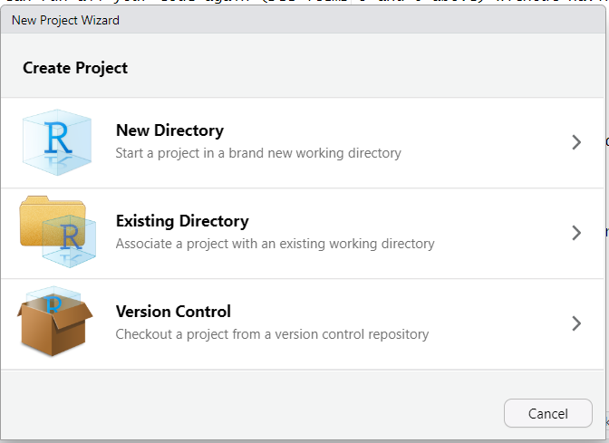
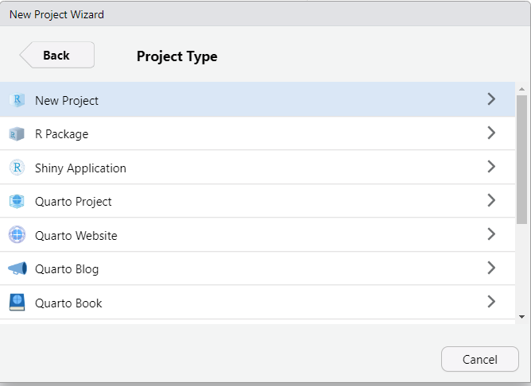
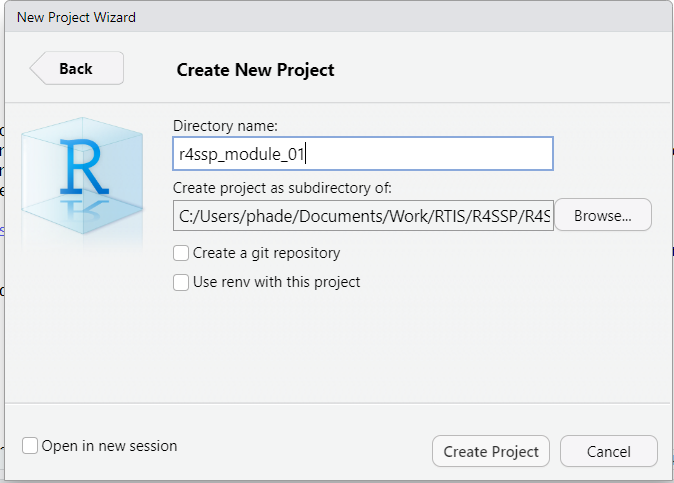

Introduction
Advances in computing and sensing technologies mean that modern
scientific research often involves very large data sets. There are now
many computer software tools available to work with big data, and
scientists from all disciplines need to be able to use them.
In this mini-course, we will help you learn to use one of the most
interesting (and popular) of these tools – the programming language R. R
is a special-purpose open-source language for statistics and data
analysis. Increasingly, R is the preferred tool for analysing and
presenting data for student research projects.
In this module, we show you how to get started with R. We will not
assume that you have any prior computer programming experience. In fact,
if you have programmed before in a language like Java or C, be aware
that R is, in many respects, very different from those languages – so
keep an open mind.
We will begin by explaining the different software tools you need,
and how to get them onto your own computers. Then we will discuss the
basic mechanics of these tools. Throughout this handout (and all
materials for this mini-course) there are code examples and R exercises
that you should work through carefully on the computer. This will
prepare you to use R for your in-course research projects later in the
semester.
This handout is designed to be read in conjunction with Chapter 1:
Introduction of R for Data
Science.
The Tools
We think of computers as storing rich meaningful data (mostly cat
videos). Actually, what computers really contain are millions of tiny
little storage units, each of which either holds an electrical charge
(usually called a 1) or holds nothing (usually called a 0). Really.
That’s it. That’s all there is.
All of the amazing things that computers do happen through extremely
complicated manipulation of all those 0s and 1s.This involves a lot of
maths and a lot of electronics, and is very, very confusing. So that
computer users don’t have to think about all these 0s and 1s, computer
scientists have developed programming languages, which
are symbolic systems that we can use to express what we want to happen
inside the machine. Programming languages are designed to be similar to
human languages, so they are easy for us to work with. Over the last 60
years many such languages have been developed: FORTRAN, BASIC, C, Java,
Python, etc., and the one we are using in this mini-course, R. Each
programming language has a vocabulary and a grammar (just like human
languages) which must be followed exactly (they are, in
fact, much stricter about this than human languages).
To communicate with your computer using a program language, you need
a special computer program (which is itself written in a programming
language, of course) that knows how to translate from the human-friendly
programming language into actions on the computer. These are called
Development Environments, because this is where people
develop software.
The most popular development environment for R is a program called
RStudio.
Both R and RStudio are installed on the computers in the Otago
University computer labs. You can work through this document on those
machines.
You can also install the R language and the RStudio program on your
own personal computers. These are completely open-source, free, and
safe.
First, install R from https://cran.r-project.org/bin/windows/base/ (for
Windows machines) or https://cran.r-project.org/bin/macosx/ (for Mac OS
machines). As of writing, the current version of R is 4.2.2. If you
already have an earlier version of R installed, consider upgrading to
the latest version by running the latest installer.
Then install RStudio from https://posit.co/products/open-source/rstudio/. Install
the Free version; it does everything that you need. Modern scientists
must be comfortable installing software on their own computers. This is
a good opportunity for you to practice this important skill, and we
encourage you to try it. If you need any help, ask us.
How to Talk to a Computer
When programming a computer you must always remember one very
important fact: Computers Are Stupid.
Really. The computer “understands” only a very small and strictly
limited set of commands (the grammar and vocabulary of a
programming language). If you deviate from this set of commands in
any way, the computer cannot figure out what you mean. It is best
to think of your computer as a well-meaning, well-trained, but not
particularly bright dog. It wants to do as it is told, but if you use a
command it doesn’t know, it can’t figure out what you intend. Be nice to
your computer – don’t confuse it.
Using RStudio
RStudio is a program that can accept R statements and convey them to
the machine. In RStudio, you type in an R command, it is executed by the
machine, and RStudio can display the results of the command, if any.
In the first instance, just to make sure R and RStudio are working
correctly, we will type a few R commands directly into RStudio and
execute them in real time (see below). Later, we will see how to store a
set of R commands in a file so that we can run them repeatedly without
having to retype.
Parts of RStudio
The RStudio interface is divided into separate
panes. In its default configuration when it first
opens, RStudio will have three panes, each of which has multiple tabs.
On the left is the Console pane. This is where we will enter our first R
commands. At the upper right is the Environment pane. This is where we
will see information about the state of our program. At the lower right
is the Files pane. Here we can navigate among files on our computer. But
more usefully, the Files pane contains a tab labelled Plots. We will
switch to this tab to see graphs that we draw with R.
Parts of the R Programming Language
Programming languages have been designed to mimic human languages.
Therefore most of them have things (like nouns) and
actions (like verbs). Programming is just explaining to
the computer in ways it can understand, what actions to perform
on specific things. R understands many kinds of things and
many, many kinds of actions. We are going to start with the very
simplest case, just to practice interacting with RStudio (i.e., giving
it R commands to convey to the computer for us).
Numbers and mathematical operators
R understands numbers (things like 8 and 3.14159) and mathematical
operators (actions like + and -). We will type some numbers and
mathematical operators into RStudio and see how the computer
responds.
Code-along Exercise
Launch RStudio. If you have installed R and RStudio on your own
machine, you should have a Desktop (Windows) or Dock (Mac OS) icon that
you can click to launch RStudio. If not, search through the Programs
start-up menu (Windows) or Applications (Mac OS). Users of the Virtual
Student Desktop follow https://blogs.otago.ac.nz/studentit/student-desktop/student-desktop-own-device/
for how to access it from your computer.
The Console pane on the left will contain some explanatory text.
At the bottom of the text is a right angle bracket
>. That is where you will begin typing. There will
be a small, flashing, vertical line beside the angle bracket. (If you
don’t have the flashing vertical line, click your mouse beside and
slightly to the right of the angle bracket.)
Type the characters shown below into the Console pane, followed
by the Enter key.
4 + 5
If everything is working as it should, your screen should look like
this (the contents of the Files pane may be different):
You have given R two things: the number 4 and the
number 5. You have asked R to perform an action on
those things: addition. R has done so, and RStudio has displayed the
result (in this case, the value 9). It has also printed [1] on the
console screen. This is RStudio trying to help you. As your R commands
become more complicated, you will end up with many results rather than
just one. RStudio prints these numbers at the start of output lines to
help you count your results. It’s not really necessary when you only
have one result, but that’s just how RStudio behaves (we refer you again
to the picture of the well-meaning doggo above).
For the remainder of this document, we will not show you pictures of
the whole screen each time we enter an R command. Rather, we will
display what you should type and what output you should get like
this:
4 + 5
## [1] 9
- Explore more of R’s mathematical operators. For division use / and
for multiplication use *. Enter each of these R commands into the
console and confirm that you receive the expected output.
10 / 8
8 * 12
6 - 12 + (3 * 7.4)
More actions: Function calls in R
R syntax (grammar) mimics mathematical equation syntax in some
respects. As we denote a function f(x) using round brackets in an
equation, so do we denote the application of a function in R. R knows
many useful functions. For example sqrt() , which computes
the square root of a number, and abs() which computes the
absolute value of a number. To apply one of these functions, we type the
name, and place the value we wish to operate on (the
argument) inside the round brackets.
Code-along Exercise
Try these examples:
abs(-42)
## [1] 42
sqrt(200)
## [1] 14.14214
Getting Help
To get information about a function type ? followed by
the name of the function (e.g. ?mean) into the console.
This will display the function’s manual page in the lower-right pane
(the Help tab).
The manual page explains what the function does, what the function
inputs are and what the function returns. Most manual pages also provide
some code examples.
For more ways to find documentation see https://datacarpentry.org/R-ecology-lesson/00-before-we-start.html#Seeking_help
More things: Words
Lots of computing involves words rather than numbers. For example,
searching text and enrolling students by name both operate on words. R
understands words – the concept of things composed of
letters. However, when working with words, we must mark them
with special characters to prevent R from becoming confused (we see what
this confusion looks like in a moment).
In programming, a thing composed of letters doesn’t have to be a real
word (it could be, for example, a product code or user id), so we
actually call them strings. To denote a
string we surround it with quote marks, like this:
"plato"
There are functions that operate on strings, exactly equivalent to
ones like sqrt() that operate on numbers. For example, R
has a function nchar() that computes how many characters
(i.e. letters) are in its string argument.
nchar("plato")
## [1] 5
Code-along Exercise
What do you think will happen if you give the commands below? Enter
them into the RStudio console to see.
nkhar("plato")
## Error in nkhar("plato"): could not find function "nkhar"
sqrt("plato")
## Error in sqrt("plato"): non-numeric argument to mathematical function
Remember that the language R is a set of vocabulary and grammar rules
that must be followed very strictly. There is no function
nkhar in R’s vocabulary, only nchar. And
function sqrt only understands how to work on numbers, not
on strings.
R will never work out what you meant when you
deviate from its grammar. No programming language will. If you violate
its rules, R will throw an error. But this can be very instructive.
Enter the following command into RStudio and carefully consider the
outcome. What does this tell you about the rules of the R language?
NCHAR("plato")
## Error in NCHAR("plato"): could not find function "NCHAR"
We know that R understands the function nchar – we saw
it working just a few moments ago. But now it says it could not find
that function? This is because, to R, nchar and
NCHAR are not the same thing. R is a
case-sensitive language. Upper-case and lower-case
letters are completely different entities in R. When giving R commands
you must always exactly match its expectations about upper and lower
case (woof).
Storing Results
Imagine that you have two large numbers and, for some sound
scientific reason, you wish to take their ratio and then take the square
root of that value. Like this:
198.7 / 64.5
## [1] 3.08062
sqrt(3.08062)
## [1] 1.75517
This operation is risky. R has given you the ratio to five accurate
decimal places. But you must then be very careful to copy that
value exactly into the sqrt function, or your answer will
be wrong. Extrapolate this to thousands of data operations on a large
data set and it is certain that errors will be made.
It would be more convenient, and safer, to take the result R gave you
from the first statement, store it somewhere, and then pass the
stored entity to function sqrt. This is, in fact, a fundamental
action in programming: We can store values as named entities
(called variables) and use them whenever and wherever we need
them.
In R, this “storing” is performed with the <-
operator (called the “assignment” operator). The assignment
operator is formed by typing a left angle bracket and a hyphen. In the
following code example, we demonstrate the assignment operator. We also
demonstrate comments. In R, any text that is prefaced
with # is ignored rather than being treated as a command. It is just
text that the programmer adds for their own benefit.
Code-along Exercise
Make sure you can duplicate this code, with the same results, in
RStudio (you don’t need to type the comments).
# Store the result of the division in an entity (a variable) named ratio. We
# always use meaningful variable names.
ratio <- 198.7 / 64.5
# This will display the value of the variable named ratio. That's what R does
# when you enter a lone variable name.
ratio
## [1] 3.08062
# This will pass the value of ratio as the argument to the sqrt function.
sqrt(ratio)
## [1] 1.75517
Variable Names and Values
Look very carefully at the variable name on the left
hand side of the assignment operator <-. It is a string of
characters, but it is not surrounded by quote marks.
This is how, in R, we distinguish strings (a word thing – remember, like
“plato”) from variable names.
Inside our computer, variables are implemented (conceptually) as
shown below. A location in memory is “named”. When you refer to the
name, the computer supplies whatever value is stored at that
location.
This means that the value of a variable can change over time. (We
will see later that this turns out to be extremely useful.)
# Store the result of the division in an entity named ratio
ratio <- 198.7 / 64.5
# This will display the value of ratio. That's what R does when you enter a lone
# variable name.
ratio
## [1] 3.08062
# Change the value stored in the variable named ratio by assigning it the result
# of a new command
ratio <- 25.9 * 12.15
# See the current value
ratio
## [1] 314.685
Complex Things
One of the great strengths of R for data analysis is that “things” in
R aren’t restricted to single numbers or single strings. Things in R can
be collections – ordered sets of multiple things.
To get a collection, we must create it, using the built-in function
c(). The c stands for combine. This
function combines multiple arguments into a single collection thing. In
R this kind of collection thing is called a vector.
Code-along Exercise
Enter these statements into RStudio, and check that you get the same
output.
# To combine elements into a vector, pass them to function c(), and separate
# them with commas
vector_of_primes <- c(1, 5, 7, 11)
vector_of_primes
## [1] 1 5 7 11
animals <- c("Armadillo", "Buffalo", "Cougar")
animals
## [1] "Armadillo" "Buffalo" "Cougar"
mixture <- c(1, "Buffalo", 42)
mixture
## [1] "1" "Buffalo" "42"
Look very carefully at the third vector variable, mixture. Note that,
when it displays the vector, R has put quote marks around 1 and 42. That
is, R thinks they are strings (a series of alphanumeric characters), not
numbers. From this we see that:
Vectors must be homogeneous. That is, all the elements in the
vector must be the same kind (type) of thing.
If you don’t follow R’s rules, it will sometimes just enforce
them on your behalf. Here it sees that Buffalo is definitely a string.
It knows that vector elements have to be homogeneous, so it makes 1 and
42 into strings “1” and “42”. R is bossy this way.
(There are more complex things in R that allow combinations of
numbers and strings. Google “R lists” to explore.)
Operating on Vectors
The operators and functions we have used so far on single numbers and
strings (e.g. sqrt, nchar) will also work on
vectors. When you use this kind of function or operator with a vector, R
applies it to each element in turn, and returns all the results.
Code-along Exercise
Enter these statements into RStudio.
primes <- c(1, 5, 7, 11)
primes * 2
## [1] 2 10 14 22
sqrt(primes)
## [1] 1.000000 2.236068 2.645751 3.316625
Write Your Own Code
Enter a new command to divide all the values in vector
primes by 2. Make sure you get these results:
## [1] 0.5 2.5 3.5 5.5
Note that vector operations work regardless of the number of elements
in the vector. You can have 1,000,000 data values in your vector and it
still requires only one command to process them all.
Whole-Vector Operations
There are also functions which summarise the contents of a vector.
For example, R has a function mean that computes the
mathematical average of the elements in a vector, and a function
sd that computes the standard deviation of the elements in
a vector. There are hundreds of such functions available, and we will
explore many of them throughout this mini-course.
Code-along Exercise
Enter these statements into RStudio.
exam_scores_vector <- c(82, 43, 97, 56, 78) # Create an example data vector
mean(exam_scores_vector) # Compute the mathematical mean of the exam scores
## [1] 71.2
sd(exam_scores_vector) # Compute the standard deviation of the exam scores
## [1] 21.53369
Write your own code
The R functions min and max return the
minimum and maximum values of a vector. Write commands to use these
functions on exam_scores_vector from the previous
exercise.
Not all R functions have such obvious names. Use Google or your
favourite R textbook to find out what function to call to get the
number of elements in a vector. Test this function on
exam_scores_vector.
Even More Complex Things
We have seen that R understands single numbers or strings, and
collections of numbers or strings (vectors). R also understands complete
tables of data (in rows and columns, like spreadsheets are arranged). In
fact, most real data analysis in R operates on tables of data. Some R
functions require you to first extract a row or column from your data
table; other functions will take an entire table and operate on it at
once (for example, many of the functions that perform inferential
statistical analyses operate on whole tables). In later modules, we will
use some of these functions. But before we do that, there is one more
very important mechanical feature of RStudio…
Saving Your Code
We have typed a lot of R commands into the console. When we close
RStudio, all that code will be gone forever. If we want
to do any of this again, we have to start over from the beginning and
type everything in again. This is unacceptable. So, RStudio lets us type
our code into a file, save the file, and retrieve the code whenever we
want, so that we can modify it or simply run it again.
Using a Script File
1. From the menu at the top of the RStudio screen select File->New
File then click on R Script. (Alternatively, you can type shift+ctrl+N
(Windows) or shift+cmd+N (Mac).)
2. This opens a new untitled file in an editing pane in the upper
left of the RStudio screen. The console pane will be pushed down to the
bottom half of the screen. You can click and drag the dividers between
the four panes to change their sizes as you prefer.
3. From the main RStudio menu select File->Save As.. to save your
file. Always give your files descriptive names to make it easy to find
the one you want later.
4. You can type R commands into the new file (in the upper left pane)
exactly as you typed into the console.
5. Executing a command that is typed into a file works a little
differently than executing a command that is typed into the console. To
execute a single line of code in the file, click your mouse cursor
anywhere on the line of code. DO NOT SELECT ANY CHARACTERS. HOLD
THE MOUSE STILL WHILE CLICKING. Then type ctrl+Enter (Windows)
or cmd+Enter (Mac).
6. To execute multiple lines of code in the file, select all the code
you want by clicking and dragging the mouse (ctrl+A or cmd+A for the
whole file), then type ctrl+Enter or cmd+Enter.
7. The output from your code will be written to the console, just as
though you had typed the code there.
8. After entering some code into your file, save it (the programmer’s
motto is Save Early, Save Often). You can then safely exit the RStudio
program.
9. Go to wherever you saved your named code file (it will have suffix
.R) Double-click on it and it should open in RStudio. If it opens in
something else (e.g. Word or Notepad), this just means that your machine
is not configured to associate .R files with RStudio. In this case,
right-click on the file, select Open With, and then
RStudio. (We see a more convenient workflow in a moment.)
10. When the file is open in RStudio you can run all your code again
(see items 5 and 6 above) without having to retype anything.
Using Projects in RStudio
An RStudio project is a folder, created from inside
RStudio, that contains related script files, data files, and RStudio
metadata files which ensure R code runs correctly and
efficiently. Most experienced R developers always organise
their work into projects. This is logically similar to organising your
regular computer files into folders – it keeps related material bundled
together, making it easier to work with.
Typically, creating a project is the first step in R
development. When a project is initially created, it contains only the
RStudio metadata files. Then data files are added by simply moving them
into folder like any other file. Script files and output files are added
to the project from inside RStudio as the work progresses. At all times,
all the related content for the project is tidily contained in the
project folder for easy location and use.
Creating a Project in RStudio
1. From the main menu select File -> New Project

2. In the resulting pop-up window, select New Directory, then New
Project, to navigate to the Create New Project dialogue box.



3. THIS IS THE TRICKY PART. The Create New Project
dialogue has a text box, followed by a Browse button.
Counterintuitively, you have to do the Browse button first.
Click Browse and navigate to where you want your project folder
to be created. Only then, click in the Directory Name text box
and type a name for your project folder. Be sure to make this name
descriptive – it is awkward to change the name of a project after it is
created. Click the Create Project button to finish. RStudio will refresh
as it navigates to your new empty project.

4. Quit out of RStudio, and navigate to the directory where you
created your project. You will find a new folder labelled with the
project name you chose.

5. Open the project folder. It will contain a folder called
.Rproj.user and a file called .Rhistory. These are RStudio metadata
files – leave them alone. (You may need to turn on hidden files in
Windows Explorer or the Mac Finder to see these files.) It also contains
a file with the project name and suffix .Rproj.

6. When you open the project in RStudio (we see how in a moment) the
project folder will be its working directory. That is,
RStudio will be “looking at” this folder. It will be able to access any
files in this folder; when you generate output files, they will be
written to this folder. To illustrate this, I have placed an Excel file
into my new project folder, and we will see how it appears to RStudio.
You can place files in your project folder by copy/paste, moving in the
Finder, or creating new files, exactly as you work with files in the
ordinary way for your operating system.

7. Double click on the .Rproj file in your project folder. This
automatically opens your project in RStudio and sets the working
directory (what RStudio can “see”) correctly. Note that the Files tab in
the lower right pane shows the contents of the project folder, including
the added spreadsheet file.

8. When working with R we recommend that you create a new project for
every module of work. The exact level of detail that defines a “module
of work” will become part of your professional style. We further
recommend that you ALWAYS begin working on any RStudio
project by double-clicking on the .Rproj file. Do not open RStudio
directly and then wander around looking for your project.
For a detailed discussion of advanced RStudio project organisation
and use, see R
for Data Science - Workflow: Projects
(https://r4ds.had.co.nz/workflow-projects.html)
An Even Better Script File
A basic script file (of type .R) will store and preserve your code.
RStudio also provides R Markdown files (of type .Rmd)
that can do much more. R Markdown is an extended script format that
allows you to embed R commands in formatted text. RStudio processes R
Markdown files, producing HTML, Word, or pdf output files. During
processing (which is called knitting) RStudio runs any embedded
R commands and inserts the results into the output
document. You don’t need to process your data in RStudio and
then copy/paste the results into a separate Word document. You can
insert the code directly into your text in an R Markdown file, and it
will be executed when RStudio knits.
We will cover RMarkdown (and its next-generation version Quarto) in
depth in Module 4, but we introduce
the process briefly here:
1. In RStudio, click on the File menu, select New File and, from the
submenu that opens, click on R Markdown.
2. A dialogue box will open, where you enter a title for your
document, the name of the author and the document date (set to the
current date by default). These will appear at the top of the knit
document. You can select the output format. Leave it as HTML for this
exercise.
3. RStudio will create a new file and open it in a new tab. The file
is untitled, so save it and give it a sensible name.
The file already contains some text. This is sample contents to
illustrate how R Markdown works. You will note that the file has areas
with a white background and areas with a shaded background. The white
areas are plain text, the shaded areas are R code When the file is knit,
that code will be run, and its output inserted into the text. To see
this in action, click the Knit icon at the top the
RStudio tab.
RStudio will produce a beautiful HTML document and open it in a local
browser window. See if you can match the R code segments in the R
Markdown document to the output that appears in the HTML page.
R Markdown is a powerful tool for generating research reports when
analysing data with R. As we proceed through this mini-course we will
explore additional features of R Markdown, and you may wish to consider
using it for your own course assignments. Check with your lecturers to
see if this is suitable.
Conclusion
In this module you have considered the inner workings of the
computer, written R commands into the RStudio Development Environment,
met some of the things R understands (number, strings, and vectors) and
some of the actions R can perform (functions). Congratulations.
What’s Next
Please fill in the module feedback form https://tinyurl.com/r4ssp-module-fb. Your input helps us
make R4SSP better.
In this week’s hands-on session we will continue to build our R
skills, working together through the exercises in the Zoom notes for
this module. (If you prefer, go ahead and try them on your own.) You can
also use the hands-on sessions to get help with any coursework,
projects, or other R questions you may have.
In our next module, we will learn how to read data files into R and
make plots and figures that you can use in a research report. We will
start with simple plots you can create using only base R. Then we will
learn to use a powerful graphics library called ggplot
(part of the tidyverse family of R extensions). With
ggplot you can make publication-quality graphs with only a few lines of
R code.
